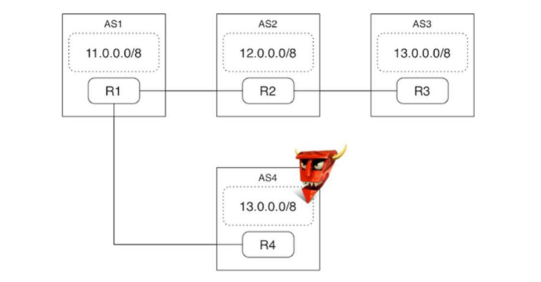
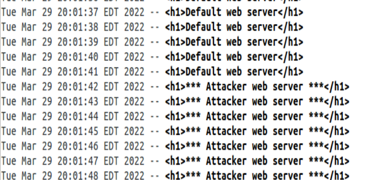

Simulating BGP hijack attacks using Mininet
BGP, standing for Border Gateway Protocol, is an inter-AS routing routing protocol used in the internet. Its working relies on the accuracy of the routing information transmitted from one AS to its neighbors as one can expect. However, this behavior brings about a weakness in BGP, using which a rogue AS can easily hijack the network intended to reach a target AS.
Such hijacking can occur when a rogue AS pretends to have a path towards the target AS in less number of hops than actual AS-path distance. Since BGP protocol defaults to shortest path to an AS when constructing routing tables, this false entry easily makes its way into the routing tables across the networks leading to such a hijack.
For example, in the 4 AS topology shown below, AS4 broadcasts 13.0.0.8 despite not actually owning these IP addresses. This is a targeted attack to grab the traffic of AS3 (such as traffic emanating from AS1) with a malicious intent.
This behavior is easy to emulate on Mininet using corresponding config files. Note that there is an underlying layer of code that processes these config files and initializes the corresponding topology. But we are going to discuss the higher-level code in this article. For example, an AS and its neighboring connections can be defined using the syntax below.
router bgp 4
bgp router-id 9.0.4.2
network 13.0.0.0/8
neighbor 9.0.4.1 remote-as 1
neighbor 9.0.4.1 ebgp-multihop
neighbor 9.0.4.1 next-hop-self
neighbor 9.0.4.1 timers 5 5

Following this convention, we first define a simple AS as shown in the image above.

Received web page before and after initializing the rogue AS.
As we can see, as soon as rogue AS (AS4) is initialized, it sends its malicious broadcast imitating AS3. This leads to AS1 routing its requests to AS4, which inturn responds with a malicious web page. Next, we move on to a more complex setup:

For example, let us take a look at AS2's configuration files defining its connections with its neighbors:
Why does ordering of routers matter in bgpd.conf files?
At first, I thought that the ordering of AS's when defining neighbors in a bgpd.conf file was arbitrary. However, upon implementation, I ran into incorrect simulation results which lead me to inspect various aspects of my implementation. Turns out, the piece of code below which creates the links mentioned in the config files is an oversimplified call:
for i in xrange(num_ases):
router = 'R%d' % (i+1)
for j in xrange(num_hosts_per_as):
hostname = 'h%d-%d' % (i+1, j+1)
host = self.addNode(hostname)
hosts.append(host)
self.addLink(router, host)
The full argument set for addLink is as shown below:
def mininet.net.Mininet.addLink (self, node1, node2,
port1 = None,
port2 = None,
** params
)
Since the port-numbers are not mentioned explicitly in the above script, it defaults to linking the first port IP address specified to the first AS and so on.
As the links are defined bidirectionally, this makes it even more complicated to ensure that the AS's are linked as intended. The simplest solution to get around this problem is to follow a strict ascending order when defining neighbors as well as port IP addresses.